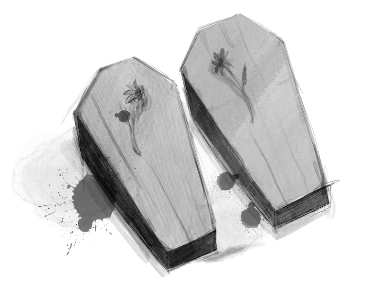

Long, long ago, in the State of Wuji, there lived a poor man. His family had old parents and a lot of children. Because the family was so poor and always in need of food and clothing, and life was more complex and more complicated. Then, the man dug a hole, burying the old parents alive and take care of the children. His neighbour saw this, was shocked and asked him why he did this. He said, "The parents are getting older, they are going to die anyway, the children are not adults, they have to go on living. I buried my parents alive and saved enough food to feed my children. The neighbour thought he was reasonable and went home to do the same. Words were spread like pollens, and everybody did the same. Over time, this had become a custom: after the elderly lost their ability to work, they would be buried alive by their children.
Later, a filial son came out of Boronai. He felt that this kind of behaviour of burying his parents alive was too inhumane. However, he had no strength to fight against this social trend. When his parents grew older, he had to dig a big hole and build a house in it. He let his parents live there secretly, sending all kinds of food and drinks every day. This dutiful son thought every day, “If only I could figure out a way to get everyone to abolish this bad habit of not being dutiful to their parents.” His filial piety moved God, “let me help him.” Then He came down to earth. God went to the king and said, "Please weigh out the weight of this elephant, or I will destroy your country." The king did not know what to do and was very worried. He called for his lords and ministers, but none of them could do anything. A minister suggested that it would be better for him to recruit talents. Maybe someone in China could answer this question. The king had no choice but to publish the recruitment list. When the news came out, people all over the country talked about it in succession. When the filial son told his mother about this, his mother thought it over and came up with a good idea. He said to God and the king, “Please take the elephant to the ship, mark the waterline, and put a big stone on it. When the ship sinks to the same line, weigh the stone on the ship, which will be the elephant's weight. God quickly gave another problem, conjured up two horses and asked the king which one is male which one is female. Kings and ministers couldn't come out of the way. The last son came back home and asked his mother. His mother told him the method. Hold the tender grass in his hands. Ran to the front of the two horses and put the grass down. “I see a horse pushed the grass to another with the mouth in the front of the group, and then itself is eating,” the son said, ”that the horse is the mother and the other is a male because a mother loves her son, so she pushes the grass to eat first.”
God nodded and said, “Right.” God turned to the king said, “Your country has such a wise man, really good! I will protect you." Then he disappeared. The king was overjoyed and offered to give the son a reward. "My mother told me all this," he said, "I did not bury my parents alive but hid them. My mother is smart and capable. We do not know how much parents are suffering and how fatigue they are. I today are the parents of credit, but also hope that the king can abolish the order of burying parents alive.” After hearing this, the king was very moved and then issued an order, “From now on, no one can bury their parents alive. Any violation will lead to prison.” From then on, the filial son and his parents lived a happy life.